Woman in Wheatfield
Ground Truth
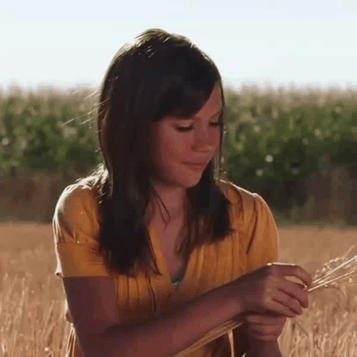BrainNRDS (Ours, Initial Frame)
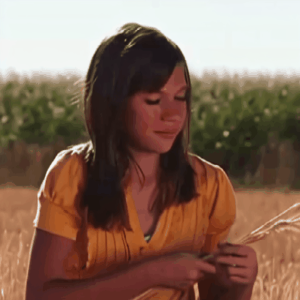BrainNRDS (Ours, End to End)
Plane
Ground Truth
BrainNRDS (Ours, Initial Frame)

While computer vision models have made incredible strides in static image recognition, they still do not match human performance in tasks that require the understanding of complex, dynamic motion. This is notably true for real-world scenarios where embodied agents face complex and motion-rich environments.
Our approach, BrainNRDS (Brain-Neural Representations of Dynamic Stimuli), leverages state-of-the-art video diffusion models to decouple static image representation from motion generation, enabling us to utilize fMRI brain activity for a deeper understanding of human responses to dynamic visual stimuli. Conversely, we also demonstrate that information about the brain's representation of motion can enhance the prediction of optical flow in artificial systems. Our novel approach leads to four main findings: (1) Visual motion, represented as fine-grained, object-level resolution optical flow, can be decoded from brain activity generated by participants viewing video stimuli; (2) Video encoders outperform image-based models in predicting video-driven brain activity; (3) Brain-decoded motion signals enable realistic video reanimation based only on the initial frame of the video; and (4) We extend prior work to achieve full video decoding from video-driven brain activity.
BrainNRDS advances our understanding of how the brain represents spatial and temporal information in dynamic visual scenes. Our findings demonstrate the potential of combining brain imaging with video diffusion models for developing more robust and biologically-inspired computer vision systems.
Our method (BrainNRDS) consists of a two-stages: first, we predict the object-level optical flow of the viewed video using the fMRI brain activations and initial frame of the video. Second, we use the predicted object-level optical flow to reanimate the initial frame of the video using a motion-conditioned video diffusion model, DragNUWA[1]. Our method can also use initial frames generated from fMRI activity from other methods and better predict the optical flow.
| Ground Truth | BrainNRDS (Ours, Initial Frame) | BrainNRDS (Ours, End to End) | Ground Truth | BrainNRDS (Ours, Initial Frame) | BrainNRDS (Ours, End to End) |
|---|---|---|---|---|---|
| 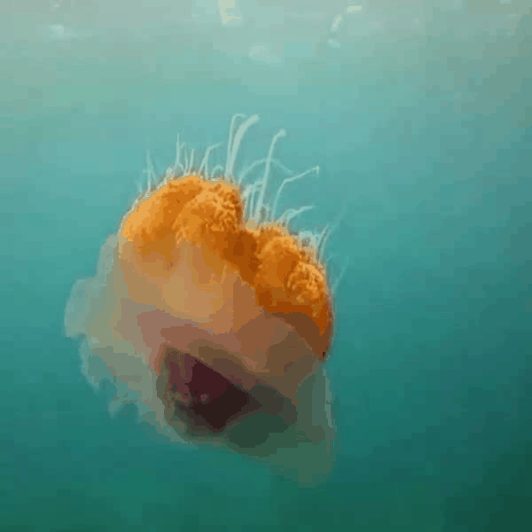 | 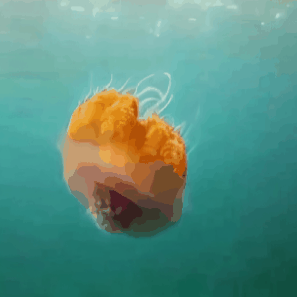 | ||||
 |
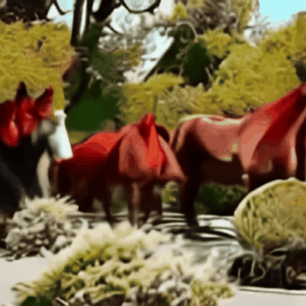 |  |
|||
| 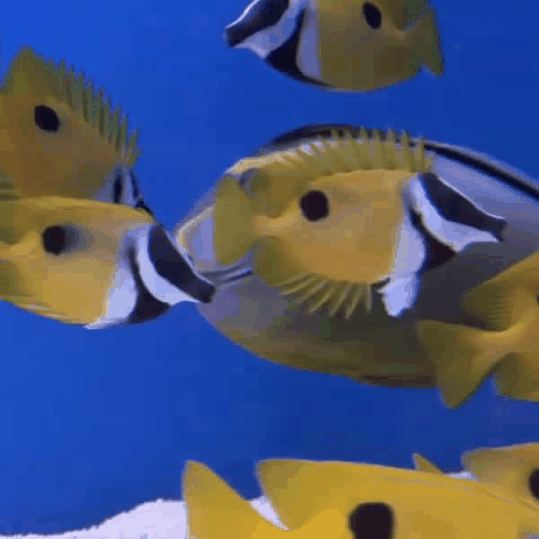 | 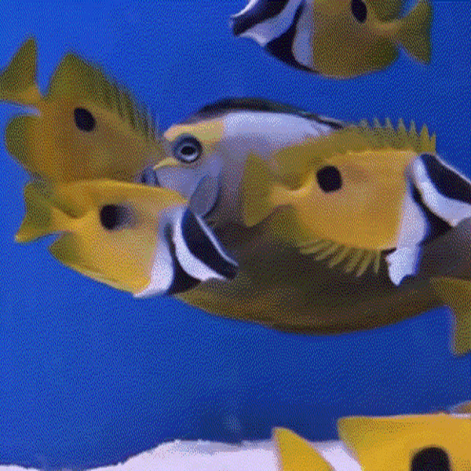 | 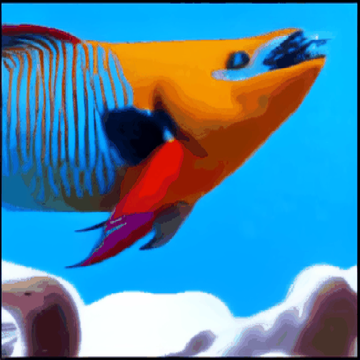 | 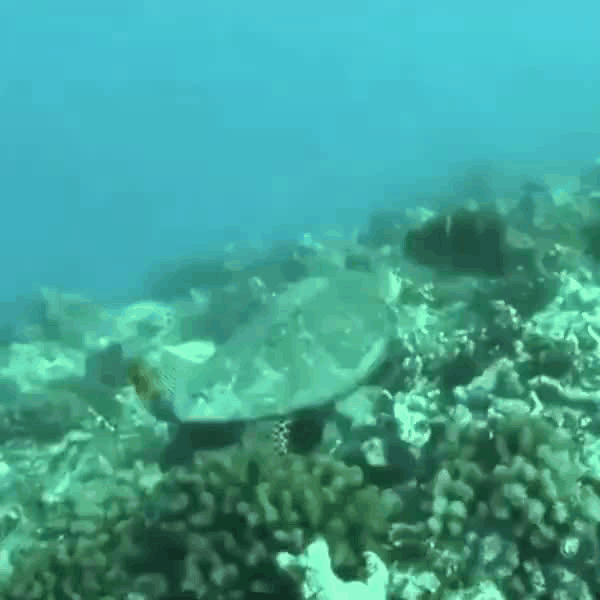 | 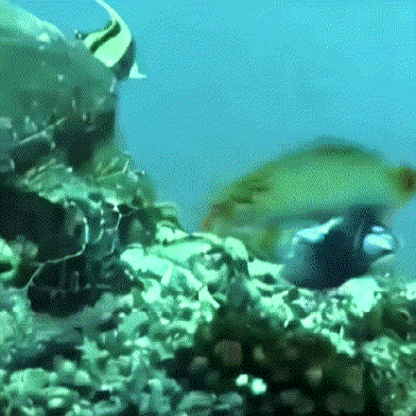 | 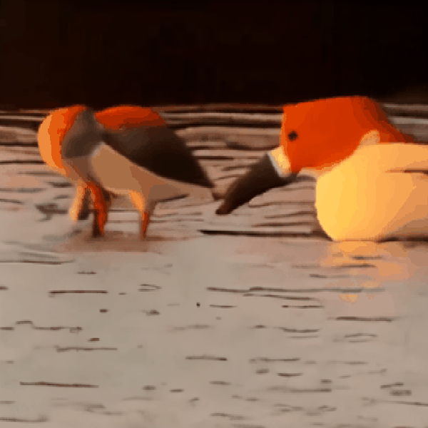 |
| 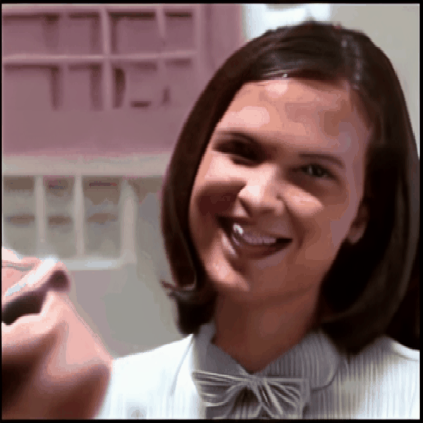 | 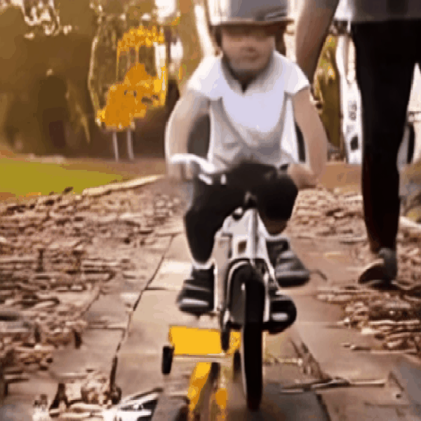 |
@article{yeung2024reanimating,
title={Reanimating Images using Neural Representations of Dynamic Stimuli},
author={Jacob Yeung and Andrew F. Luo and Gabriel Sarch and Margaret M. Henderson and Deva Ramanan and Michael J. Tarr},
year={2024},
eprint={2406.02659},
archivePrefix={arXiv},
primaryClass={q-bio.NC},
url={https://arxiv.org/abs/2406.02659},
}